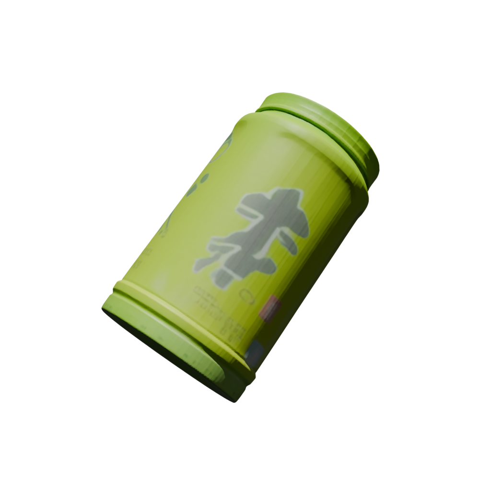

Input: 2D Image + Mask

Output: 3D Mesh (Blender Render)
Date: February 3, 2026 | Time: 14:01 - 14:10 PST
Input: 2D Image + Mask
Output: 3D Mesh (Blender Render)
| Property | Value | Notes |
|---|---|---|
| Vertices | 379,258 | High-detail mesh |
| Faces | 758,508 | ~2 faces per vertex (typical for closed mesh) |
| Bounding Box | [[-0.33, 0.36, -2.25], [0.37, 1.56, -1.01]] | World space coordinates |
| Extents (X, Y, Z) | 0.70 × 1.20 × 1.24 | ✅ All dimensions similar = volumetric object |
{
"translation": [0.044, -0.314, 1.662],
"rotation": [0.015, 0.016, 0.935, 0.354], // quaternion (x, y, z, w)
"scale": [1.124, 1.124, 1.124]
}
| Stage | Duration | Description |
|---|---|---|
| Model Loading | ~26 seconds | Load checkpoints + DINOv2 models |
| Sparse Structure Sampling | ~8 seconds | 25 inference steps, 18,578 coords |
| Sparse Latent Sampling | ~74 seconds | 25 inference steps |
| Decoding (Mesh + Gaussian) | ~7 minutes | Generate mesh via slat_decoder_mesh |
| Post-processing + Export | <1 second | GLB export with vertex colors |
| Total | ~9 minutes | End-to-end reconstruction |
| Component | Version / Value |
|---|---|
| OS | Windows 11 |
| GPU | NVIDIA GeForce RTX 5080 (16GB) |
| CUDA | 12.8 |
| Python | 3.11.14 |
| PyTorch | 2.8.0+cu128 |
| Conda Environment | sam3d_py311 |
| Blender | 4.5.5 LTS |
green_tea_bottle.png = inverted mask (table only, bottle cut out)ito_en_green_tea_bottle.png = correct bottle image ✅slat_decoder_gs → Gaussian Splatting (for color/appearance)slat_decoder_mesh → Mesh geometry (vertices + faces)postprocess_slat_output() function then combines them:
| File | Size | Location |
|---|---|---|
| GLB Model | 15 MB | output/viga_test/ito_en_green_tea_bottle.glb |
| Blender Render | ~500 KB | docs/test_results_images/ito_en_green_tea_bottle_render.png |
# Run SAM3D on Windows (PowerShell)
Set-Location .
$env:PYTHONPATH = "."
conda run -n sam3d_py311 --no-capture-output python "tools\sam3d\sam3d_worker.py" `
--image "output\test_sam\ito_en_green_tea_bottle.png" `
--mask "output\test_sam\ito_en_green_tea_bottle.npy" `
--config "utils\third_party\sam3d\checkpoints\hf\checkpoints\pipeline.yaml" `
--glb "output\viga_test\ito_en_green_tea_bottle.glb"
# Render GLB with Blender (PowerShell)
& 'blender' --background `
--python "render_glb.py" -- `
"output\viga_test\ito_en_green_tea_bottle.glb" `
"docs\test_results_images\ito_en_green_tea_bottle_render.png"
Generated: February 3, 2026 14:25 PST